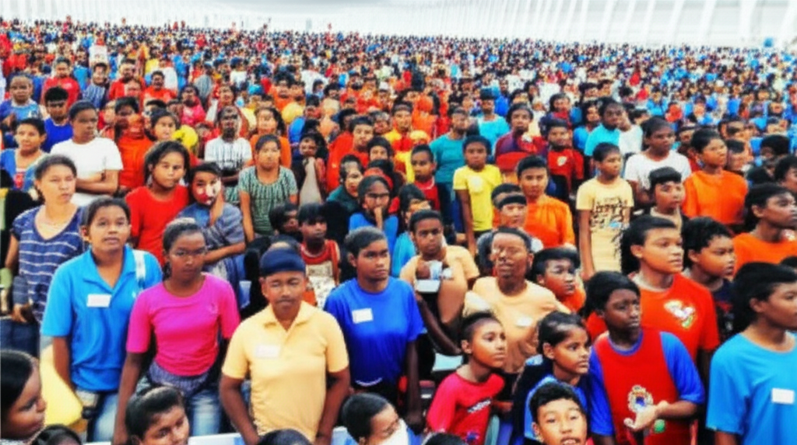

本文彙整了2025年5月8日的各類新聞資訊，涵蓋健康、科技、旅遊等多個領域，旨在提供一個快速了解今日重要新聞事件的管道。從蘋果iPhone 16的搶先體驗，到女性腹部肥胖的心血管疾病風險，再到旅遊業的低價陷阱，本文將一一為您解讀。
蘋果iPhone 16、iPhone 16 Pro的搶先體驗成為科技愛好者關注的焦點。自由電子報3C科技對此進行了報導，暗示著新機的創新功能和設計方向。同時，三星超薄手機S25 Edge是否將在台灣開賣也備受期待。這些新聞反映了行動裝置市場的持續創新和競爭。
多個新聞報導關注健康議題。自由健康網強調了辨別真假蜂蜜的方法，而am730則報導了女性腹部肥胖與心血管疾病風險的關聯，並提供了測量腰圍的建議。此外，控制貓咪體重的重要性也受到了關注。這些新聞強調了健康生活方式和疾病預防的重要性，體重管理和控制成為焦點議題。同時，GLP-1藥物在體重管理中的應用也持續受到關注，FDA預計在2025年第四季可能會有相關消息。
中國新聞網報導了以體重輕為名義的低價旅遊陷阱，提醒消費者警惕。此外，關於立夏的傳統習俗，如“立夏吃蛋.石頭踩爛”的說法，也在新聞中有所提及。這些新聞反映了旅遊市場的亂象以及傳統文化的傳承與現代詮釋。聯合新聞網則關注了2025白沙屯媽祖進香的神蹟，吸引許多民眾關注。
今日新聞涵蓋範圍廣泛，從科技產品的革新到健康飲食的建議，再到旅遊消費的陷阱。整體而言，健康議題和體重管理在新聞中佔據重要地位，反映了社會對健康生活方式的日益重視。消費者在享受科技進步和旅遊便利的同時，也應保持警惕，避免落入不法商家的陷阱。